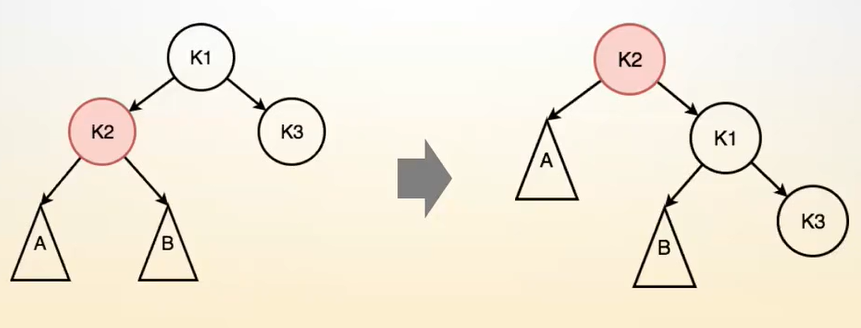

AVL树
为了解决二叉排序树在极端情况下(如数列有序)退化成线性表，导致树高为元素个数，从而使得各操作(如插入、删除、查询)的效率由O(log(n))降低为O(n)的问题，由此有了平衡二叉排序树。
所有的平衡二叉排序树仅在平衡条件上有所区别，剩下的基本相同，本质上都是二叉排序树。
性质(平衡条件)
|H(left) - H(right)| <= 1
即任意节点处的左子树高度与右子树高度差小于等于1。
优点
由于对每个节点的左右子树的树高做出了限制，所以整棵树并不会退化成一个线性表，效率也不会降低。
思考
1、高度为H的BS树(二叉排序树)，所包含的节点数量在什么范围之内？
2、高度为H的AVL树，所包含的节点数量在什么范围之内？
对于思考1：
考虑节点的上界：若要保证树高为H，则最多可以有(2H-1)个节点(即满二叉树)。
考虑节点的下界：若要保证树高为H，则最少可以有H个节点，此时为最差情况，BS树已退化成链表。
所以思考1的节点数量范围为：H <= x <= (2H-1)
对于思考2：
考虑节点的上界：与思考1的上界相同，均在满二叉树的情况时达到最多节点数(2H-1)个节点。
考虑节点的下界：记 low(H) 代表高度为H的AVL树的最少节点数量，有low(1) = 1，low(2) = 2，low(3) = low(2) + low(1) + 1，则可得出递推公式：low(H) = low(H - 2) + low(H - 1) + 1
所以思考2的节点数量范围为：low(H - 2) + low(H - 1) + 1 <= x <= (2H-1)，low(1) = 1, low(2) = 2, H >= 3。
对于AVL树来说，近似将其节点范围看作1.5H <= x <= 2H -1，其节点数量与树高的关系总是log(n)的关系。
若节点数量有n个，树高最高为log1.5n，最低为log2n，也就证明当我们将n个节点插入AVL树中，其效率总为logn级别的。
AVL提高了传统二叉排序树的下界。
基本调整操作
左旋
若以根节点K1进行左旋，则整体掐着K1向左旋转(逆时针旋转)，K3成为K1的父节点，K1成为K3的左子树，K3原有的左子树变为K1的右子树，调整完之后的树仍然是二叉排序树。(以K1节点进行左旋，则K1节点的右子树的根节点变为左旋之后的新树的根节点K3，K3原有的左子树节点变为原来的根节点K1的右子树节点，而K1节点本身变为新根节点的左子树的根节点)
为何调整完之后的树仍然是二叉排序树？
简单证明：在上图的左边图中，本身是二叉排序树，A节点在K3节点左子树上，说明A节点的值小于等于K3结点的值；A节点同时在K1节点右子树上，说明A节点的值大于等于K1结点的值。当K3作为根节点，K1挂到K3的左子树上时，A节点则挂到K1节点的右子树上，K1节点的左子树不变。这样调整完之后的树仍然是二叉排序树。
右旋

类比于左旋。
失衡类型
当往一个二叉排序树中插入一个新节点时，出现了子树间高度差大于1的情况，则说明这个二叉排序树失衡。
由于是一个节点一个节点的插入，当第一次出现失衡时，左右子树间高度差应该为2(画图可知)。
对于上图，需要注意的是K1并不一定是整棵树的根节点，它是从下往上看第一个失衡的节点。
对于LL型失衡，如上图，若站在K1节点处，K1节点的左子树高度大于K1节点的右子树高度，并且高度差为2，K1节点的左子树的左子树仍然要高一些，则称这种失衡为LL型失衡(即某个节点的左子树高于右子树，其左子树的左子树也高于右子树)。
对于LR型失衡，某节点的左子树高于右子树，其左子树的右子树高于左子树。
RR型失衡可类比于LL型失衡，RL型失衡可类比于LR型失衡。
如何调整？
LL型失衡与RR型失衡的调整
LL型失衡即左子树的左子树高度更高一些。
在LL型失衡中有如下关系存在：
以H(x)表示x节点子树的高度。
H(2) = H(3) + 2 = H(a) + 1 => H(3) = H(a) - 1 = max(H(c), H(d)) + 1 => H(a) = max(H(c), H(d)) + 2
H(b) = H(a) - 1 (若高度相同，不用插入新节点其本身就是失衡)
当这种失衡类型发生时，说明整棵树左边过重，则需要在第一个失衡处进行整个的大右旋，将其朝左边倾斜倾斜。
在大右旋调整后的树中有如下关系存在：
H(1) = max(H(c), H(d)) + 2 = H(b) + 1 (又H(a) = max(H(c), H(d)) + 2 = H(b) + 1，所以右旋后的树的H(1) = H(a)，站在K2节点处，左右子树高度相等，则平衡 )
H(b) = H(a) - 1, H(3) = max(H(c), H(d)) + 1 = H(a) - 1 (所以站在K1节点处，H(b) = H(3)，左右子树高度相等，则平衡，而原本A、B、C、D子树内部平衡，所以整棵树平衡)
RR型失衡与LL型失衡类似。
LR型失衡与RL型失衡的调整
LL型失衡即左子树的右子树高度更高一些。
在LR型失衡中有如下关系存在：
H(3) = max(H(b), H(c)) + 1
H(a) = h(3) - 1 = max(H(b), H(c))
H(2) = H3) + 1
H(d) = H(2) - 2 = H(3) - 1 = H(a)
在LR型失衡中表明左子树的右子树更深一些，所以首先将左子树的根节点进行小左旋，调整成LL型，然后再进行大右旋。
在LR型失衡中，将其小左旋后有如下关系存在：
H(2) = H(a) + 1
H(3) = H(a) + 2
H(d) = H(a)
小左旋后有H(3)与H(d)之间的高度差仍为2(此时K3已经K1左子树的根节点)，这个时候LR型失衡已经转为LL型失衡，此时再进行大右旋后调整完毕。此时有如下管辖存在：
H(d) = H(a) = max(H(b), H(c))
H(2) = H(a) + 1
H(1) = H(a) + 1
站在K3节点处看，左右子树高度相等，则平衡。
RL型失衡与LR型失衡类似。
代码
1 |
|